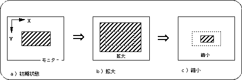
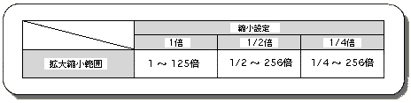
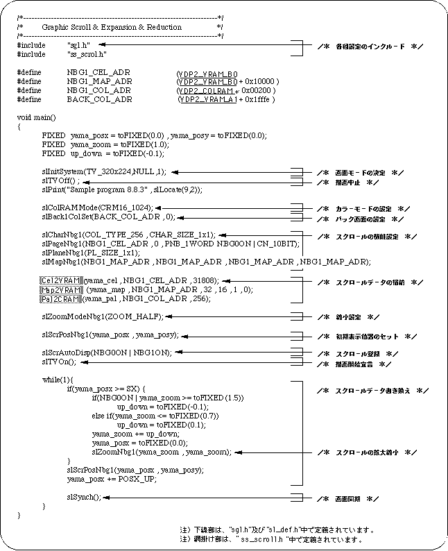
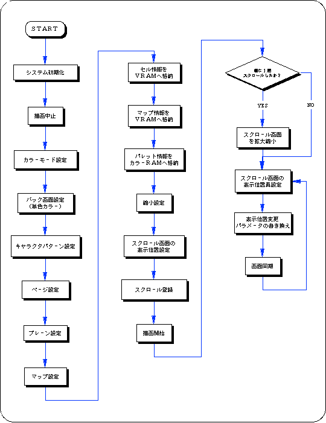

Return to previous page | Return to menu | Go to next page
Among the normal scroll screens, “NBG0, NBG1” can be scaled (maximum: 1/4 to 256 times). An image of this is shown below.

The scope of scrolling using the normal scroll screen “NBG0, NBG1” varies depending on the reduction setting of the scroll function setting.

Use the library function “slZoomNbg0,1” corresponding to the normal scroll screen “NBG0, NBG1” respectively to enlarge / reduce the normal scroll screen in SGL.
It is necessary to substitute the reciprocal of the desired multiple for the parameter used for scaling the scroll (for example, 1/2 if you want 2.0 times).
The following sample program (Listing 8-4) is an example of actually scaling the normal scroll screen using the SGL library function.
 
This is because the value indicated by the parameter does not directly represent the scale value.
The value assigned as the parameter of the enlargement / reduction function indicates the amount of movement to the next dot to be displayed after scrolling 1 dot.
If you specify 2.0 as the amount of movement, the scroll will skip one dot at a time and the next dot will be displayed. As a result, the scroll will be reduced by a factor of 1/2.
List 8-4 sample_8_8_3: Scroll scaling
Flow 8-5 sample_8_8_3: Scroll enlargement / reduction